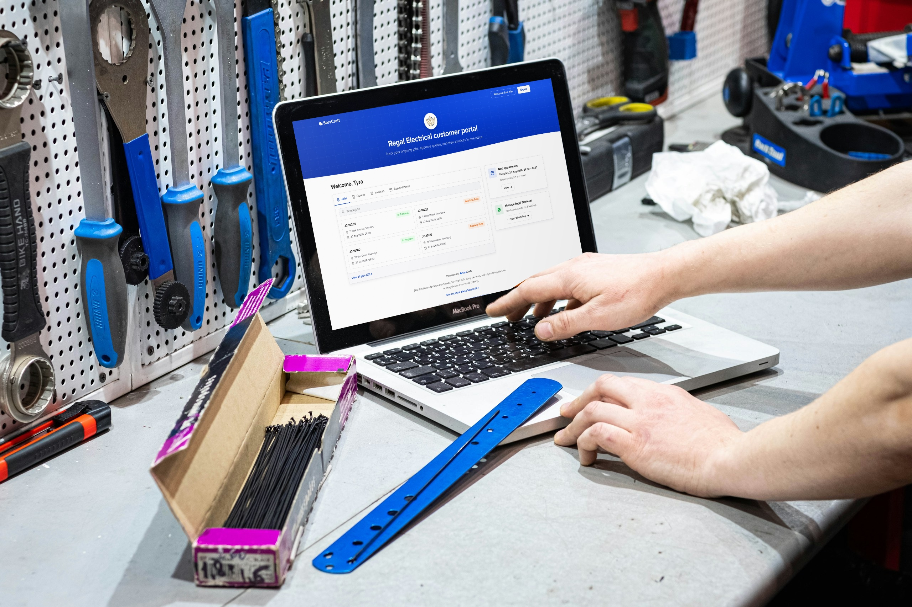
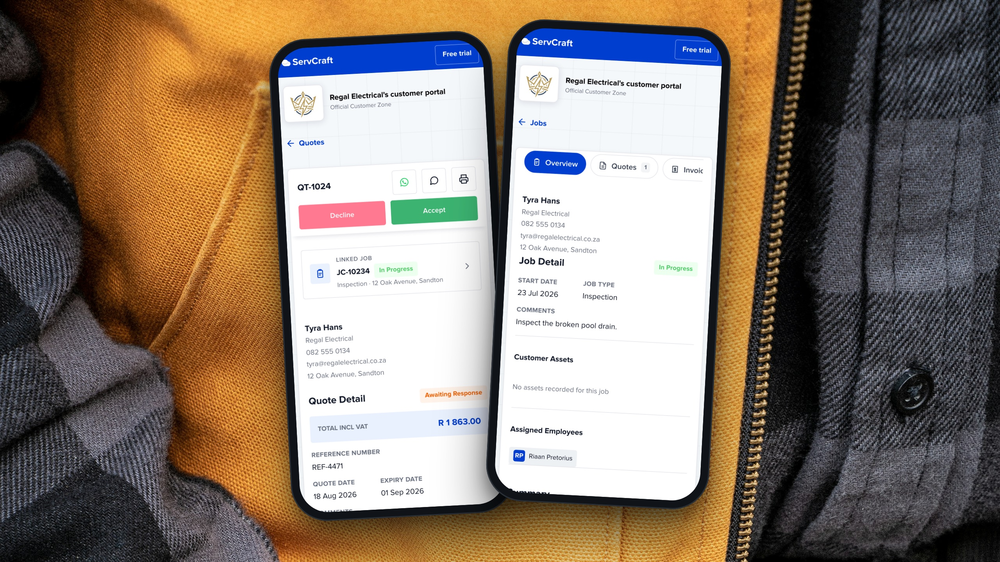
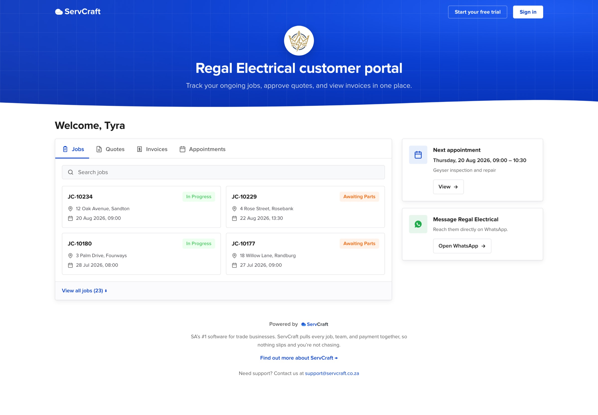
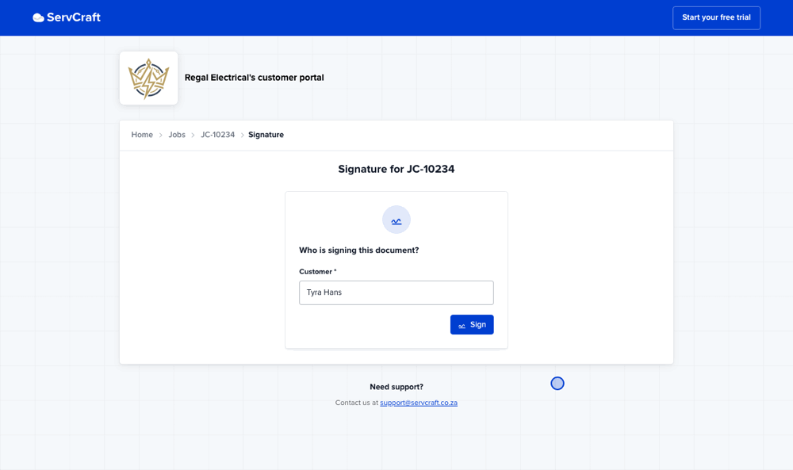
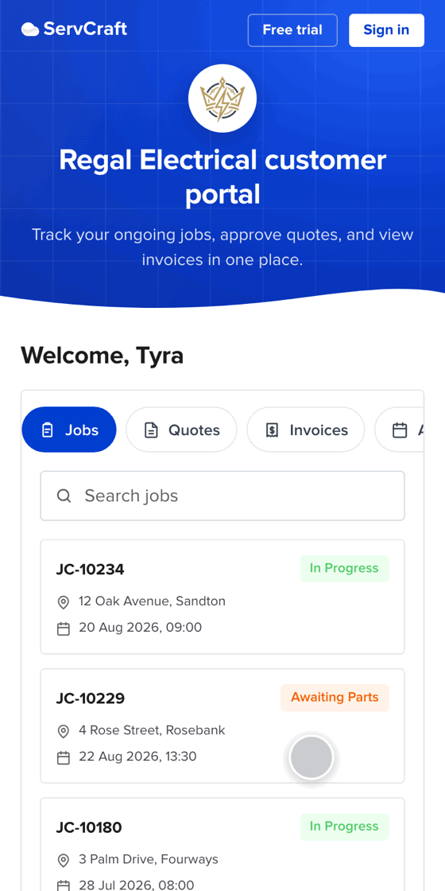
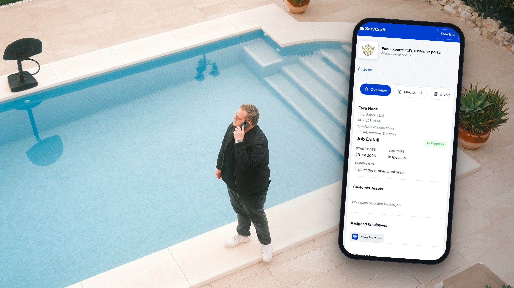

From a confusing list of jobs to a connected customer portal experience.
I redesigned ServCraft's Customer Zone, the portal where a trade business's customers follow their jobs. It went from a fragmented, read-only list to one place where customers can track progress, review quotes, pay invoices and take action.
A home screen, connected records and actions in context help customers find their way without calling the business. I also built a working HTML prototype so the team could test changes quickly.
The problem
Customer Zone is ServCraft's client portal, the same kind of tool as Jobber's client hub or Housecall Pro's customer portal. Homeowners and business clients use it to keep up with the work a trade business is doing for them.
The old version gave them their records but little guidance. They landed on a jobs list with no overview, and quotes, invoices and appointments lived in separate sections.
Process
I built the portal as a working HTML prototype, the one embedded at the top of this page. Product, engineering and support clicked through flows instead of reviewing static frames, gave specific feedback on a working link, and the improvements went out to customers.

The redesign
I started from one question: what does a customer need to understand and do when they open this portal? I then organised the experience around their journey instead of ServCraft's record types.
| Design decision | Customer benefit |
|---|---|
| A home screen | Know what's happening and where to go next. |
| Connected job records | Find everything related to a job in one place. |
| Actions in context | Complete tasks without unnecessary navigation. |
| Clearer sign-off | Understand and confidently complete the process. |
| Mobile navigation | Access information and act easily from a phone. |
| Secure, expiring links | Keep personal information protected, in line with POPIA. |
A home screen to start from
The old portal opened straight onto a jobs list.
The new home screen is where every visit starts. Customers see their jobs and what's coming up, then go where they need.

The old jobs list on the left, the new home screen on the right.
Connected job records
One home card with tabs and search replaced four list pages. Each job shows its quotes, invoices and appointments, and every record links back to its job.
Actions in context
A sticky action bar keeps Accept, Decline, WhatsApp and Print in reach, with the total shown first.
Clearer sign-off
Sign-off now sits inside the job. It asks who is signing, then confirms with the same notification the main app uses.

Mobile navigation
Most customers open the portal on a phone. Tabs become swipeable chips, breadcrumbs become a back link, and secondary actions shrink to 44×44 icons.


Design system
The portal uses ServCraft's tokens. Where a value felt too heavy for a customer-facing page, I changed it and wrote down why.
| Element | Design system | Portal | Why |
|---|---|---|---|
| Card elevation | Hard 20% black drop shadow | Soft two-layer shadow | Looked dated on white |
| Surfaces | Grey card fills | Pure white cards | Read dull to customers |
| Status pills | Often with a coloured dot | No dot, label only | The label carries the meaning |
| Status backgrounds | Ad-hoc transparent tints | Existing flat background tokens | Tints went muddy |
All deviations live in two CSS blocks, so developers have one place to reconcile them with the design system.
Accessibility
Customers use the portal on whatever device they have, often in a hurry, so accessibility was part of the brief from the start.
- Icon-only actions are at least 44×44px, and main buttons are at least 44px tall.
- A 16px base size keeps dates and totals readable without zooming.
- Every status has a text label, so meaning never depends on colour.
- The action bar stays on screen for people who zoom in or scroll slowly.
Secure access
Customers open Customer Zone from a link, without creating an account. That keeps the portal easy to use, but it also makes the link the key to a customer's personal information. So I designed how people get into the portal with the same care as the screens they land on.
The trade-off
Links travel by email, SMS and WhatsApp, and messages stay in inboxes for years. A link that never expires means anyone who later gets hold of that message can open a customer's name, phone number, address, quotes and invoices.
Designing for POPIA
POPIA, South Africa's Protection of Personal Information Act, has been enforced since July 2021. Every trade business using ServCraft is responsible for its customers' data under the Act, which requires them to:
- keep personal information secure against loss and unauthorised access
- limit who can see it, and for how long
- tell the Information Regulator and the people affected if it is exposed
Serious breaches can lead to fines of up to R10 million, so the portal needed to help businesses meet these obligations by default.
The decision
I made the case for safety: the risk of links that never expire, what POPIA asks of our customers, and how to keep access simple for the people who need it. Expiring links were quickly implemented as part of the release.
The aim was a link that stays valid long enough for a customer to act on, without staying open indefinitely.
Outcomes
Customers can now get things done in Customer Zone instead of only looking things up.
- Customers have a clear starting point, and each job's quotes, invoices and appointments sit together.
- Quotes, invoices, messages and sign-off all happen inside the portal.
- Each business gets a branded portal it can be proud to send to clients, which also gave the sales team more to show.
- Expiring links help every business protect its customers' data under POPIA.
The biggest lesson was how much faster decisions came once people could click through an idea instead of commenting on static screens.
← Back to all work